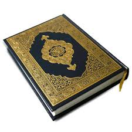
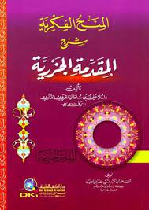
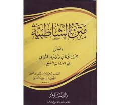

You are welcome to Ahlul Quran Hompage
Ahlul Quran is a non profit making organisation which has been set-up by a group of young men who love to serve Allah by teaching His glorious Book (Quran) whereever they find themselves..
Ahlul Quran is looking forward to producing or graduating memorisers (HUFFAZ) of the Glorious Quran by some few years to come In Shaa Allah
AL QURAN

Al Quran is the Holy Book which was sent by Allah to Malak Jibreel to prophet Muhammed (SAW)
History has unfolded that it was completely descended on the day of Ramadan, At Ahlul Quran we encourage and enforce our student to memoride the Quran as well as its sciences of reading(Tajweed) with the help of our Tutor Sheikh Uthman Abdulai Patty
JAZARIYYA

Jazariyya is a poem that Ibn Al Jazari wrote summarizing the rules of Tajweed. Having ijazah in Tajweed often means that you have studied this text and your teacher has given you permission to teach it to others.
In the Jazariyyah, Ahlul Quran move beyond the basics and study Tajweed as a science as well as seeing how Tajweed intersects with Arabic grammar and other sciences.
MATN SHATIBIYYA

The book is officially titled Hirzal Amani Wawajhatahani or the Shatibiyyah written by Imam As-Shatibi, an andalusian scholar of the Quran and it’s sciences. He wrote his book, the Shatibiyyah to make it simple for students of knowledge to learn the 7 Qiraa’aat in a simple poem-format.